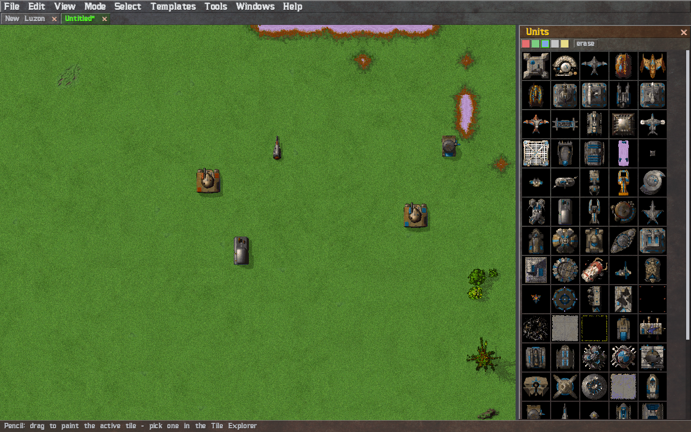
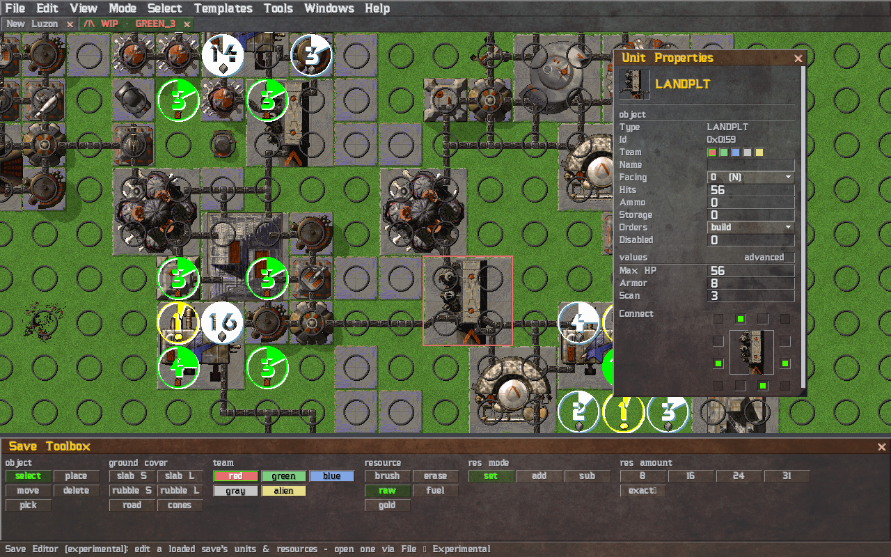

M.A.X. Map Editor - Manual
A map editor for M.A.X.: Mechanized Assault & Exploration (Interplay, 1996). This manual covers the portable release; everything also applies when running from source with cargo run.
1. Getting started

- Unzip the release anywhere you like. That folder is the whole install - the editor reads and writes its settings beside the binary, nothing touches your home directory.
- Run
max-map-editor(Linux) ormax-map-editor.exe(Windows). - Optional but recommended: tell the editor where your M.A.X. game lives. Edit → Editor Preferences… has a field (and a Browse button) for each folder; the editor also offers the dialog on the first start where one is unset, and its don't ask again tick silences that prompt for good.
| Field | Holds | Unlocks |
|---|---|---|
| M.A.X. folder | MAX.RES and the installed .WRL maps | unit sprites, resource markers, Load dialogs that start there |
| M.A.X. Port folder | your saved games (.DTA) | Open/Export Save File start there (§7) |
| M.A.X. Port data | PATCHES.RES (the install/assets folder) | stock unit stats for save editing (§7) |
The same three land in [Paths] of your user mme.ini (§8) as MaxPath, MaxPortPath and MaxPortDataPath, so you can hand-edit them instead. None is required: without them the terrain editor works in full, and only the unit/save features stay dark.
Linux desktop integration (optional). The zip includes install.sh. It copies the app to ~/.local/share/max-map-editor (or a directory you pass), asks for your MAX path, and adds a menu entry + icons. The editor never requires installation - the unzipped folder works as-is.
The editor opens a green starter map when launched without arguments. To open a specific document, pass it on the command line or use File → Load Map… (File → Quick Load keeps your last ten).
2. Documents: projects and WRL

The editor works on map projects (.json) - layered, tileset-aware documents. The original game format (.WRL) is import/export:
- Opening a
.WRL(File → Load Map) converts it into a project on the fly, keeping the WRL's own tiles as a synthetic, one-off pack. - File → Import WRL… instead rebuilds a standard-tile WRL on top of existing tilesets (see below) - the result is a fully editable project that reuses the shipped/user packs (auto-shore, variants, repaints all apply).
- Save (
Ctrl+S) writes the project; Export bakes a game-ready.WRLyou can drop into your M.A.X. install. The map's metadata (see Map Metadata below) rides along as a small JSON block appended after the WRL payload - the game ignores it. The first save of a never-saved map (including one opened from a template) prompts the Map Metadata dialog before the file dialog; a template-born map starts that prompt with date/version/author cleared.
Import WRL (match onto tilesets)
File → Import WRL… takes a WRL that was built from standard game tiles and re-expresses every cell as a reference into the tilepacks you choose:
- Pick the
.WRL, then tick the tilesets to match against (WATER is always the base; the palette-owner radio works like New Map). - Each used WRL tile is matched against those packs by palette index, in all 8 orientations, so a rotated/mirrored tile reuses one pack tile with a transform. Animated coastal-water (palette indices 96-116) and a shore tile's transparency mask are wildcarded, so coastal tiles match whatever animation phase the WRL baked in. Matches are typically 95-100% for the originals.
- If some tiles match nothing, a list of them appears with three choices: Abort, Ignore missing (drop them - the water base shows through), or Import tiles with a destination toggle: This project (bundle the leftovers into a one-off pack saved beside the
.json) or User tileset (fold them into the user pack mirroring the chosen tileset, deduped by exact pixels + pass so re-imports don't pile up duplicates). With nothing missing the converted map opens immediately.
The result is a new untitled project (Save → Save As to keep it).
The 24 original maps, rebuilt as ready-to-edit starter projects, ship in resources/assets/maps/ - the Templates menu loads them directly.
Project files carry a format version ("mme_project_file_version": "2.1" - the minor went up with the scenery list, §4). The editor opens any file of the same major version, migrating it to the version it writes; a different major version is refused. Older pre-versioning projects are migrated automatically the first time you save them. A map saved here still opens in an older 2.x build - but that build knows nothing about scenery and will drop it the next time it saves.
3. The workspace

- Tabs - several documents can be open at once; the tab strip sits under the menu bar. Closing a document with unsaved changes asks first.
- Panels - Minimap, Tile Explorer, Color Palette, WRL Internal Palette, Toolbox, Units, Scenery, the Pass Types Palette (for the pass editors, §4), and - for save editing (§7) - Save Toolbox and Unit Properties live in docks around the map view. Drag a titlebar to float a panel, drag it near an edge to dock it there, drag the splitters to resize. The close glyph hides a panel; the Windows menu brings it back. Windows → Reset layout restores the default arrangement. A panel with more content than fits scrolls by mouse wheel, by dragging its scrollbar (click the track to page), and by PageUp/PageDown/Home/End while the cursor is over it.
- Status bar - a strip along the bottom shows a context hint for the active tool/mode, the cursor's cell coordinates, and the current selection's size. Toggle it with View → Status Bar.
- A layout per mode - the map editor, the pass editors, and the save editor each remember their own arrangement, so the panels a mode needs come back when you switch to it and don't crowd the modes that don't. Switching modes swaps the layout; each is persisted in its own INI section (§8).
- The layout is saved automatically on exit and restored on the next start.
Map navigation
| Action | Default control |
|---|---|
| Pan | drag with Middle or Right mouse button |
| Zoom | mouse wheel (towards the cursor) |
| Fit map to window | F |
| Paint | Left mouse button (a drag is one stroke = one undo step) |
4. Editing

- Tile painting - pick a tile in the Tile Explorer (or eyedrop one from the map with the picker tool), then paint. The Toolbox's brush dropdown sets the pencil/eraser footprint size and shape group its shape (square or circle). Fill floods a connected region - or, when a selection is active, fills exactly that selection. With Randomize on, painting places random variants of the chosen tile so large areas don't look stamped. Delete (
Del) clears the selected cells' ground. - Terrain Brush - free-hand paint a land/water mask, like a brush in a paint program, and let the editor build the terrain from it. The Toolbox's land and water buttons (or the
Q/Wkeys) choose what the brush lays down; drag on the map to paint it (the brush size and shape apply, same as the pencil). Land becomes flat ground and water becomes open sea - and when you release the stroke, the editor grows the coastline (beach + animated coastal water) along the new land/water boundary, all as one undo step. The Toolbox's auto shore select chooses that release behaviour: sweep (uniform), loop-walk (varied), or disabled to leave the painted land/water raw (then shore it later from Tools → Shore). It's the same land/coast the random generator makes, but shaped by hand. No tile needs to be selected. (Scriptable aspaint-mask X Yafter atool paint-land/tool paint-water, withauto-shore off|sweep|loop-walk; thenshorethe painted region.) - Tile Painter - paint a tile's pixels by hand. The Tile Explorer's header has new (a blank tile), clone (a copy of the selected tile), edit (the selected tile in place), and del (remove the selected tile) buttons. del removes a tile from its pack - user tiles in normal mode, any tile in
--dev; a tile still painted on the map is protected (erase it first). Pick a color from the 256-swatch palette grid or eyedropper one off the canvas; the swatch of the pixel under the cursor is ringed so you can see which slot it uses. The preview zooms (100 / 200 / 400 / 600 %) and, with animate colors on, cycles MAX's palette ranges live (water shimmer, etc.). replace recolors every pixel of a clicked color to the current color at once; copy / paste move a whole tile's pixels (raw indices) between tiles. export png / import png save the tile to / load it from a PNG image - on import each pixel maps to its visually closest palette color (any image size is sampled down to 64×64; transparent pixels become the family's mask color). A passability selector (land / water / shore / blocked) sets the tile's movement type, and the tile id field names the tile (a fresh suggestion for clones; editing it on an existing tile renames it). new and clone save to a user pack underresources/user/tilepacks/<PACK>/(named after the pack the tile derives from), available to any map that uses that pack. Shipped (stock) tiles are read-only - edit them only in developer mode (see--devbelow); otherwise clone and edit the copy. - Map Metadata (Edit → Map Metadata…) - optional metadata: name, suggested player range (2-2 / 2-3 / 2-4), description, date, version, author. Every editable field here and in the other dialogs is a full text editor: caret + arrow keys, Home/End, Shift-select, mouse drag-select, double-click to take the word under the pointer (drag on from there and it extends word by word), triple-click to take the whole line - the whole field, in a single-line one - the system clipboard (
Ctrl+X/C/V), and a right-click menu with Cut/Copy/Paste/Select All. Fields are ASCII and accept only their valid characters (e.g. digits for sizes). The description is multiline: Enter inserts a newline (carriage returns are always stripped), and a scrollbar appears - draggable, wheel- and Home/End-scrollable - when the text overflows. - Layers - projects have a water base layer and a ground detail layer; painting acts on the active one (the Layers menu). Layers are a convenience for editing, not a hard rule - tiles simply stack bottom-up. An opened
.WRLis decomposed onto the two layers by passability (water cells on the base layer, land/shore/obstructions on the ground layer). Scenery is the third entry: not a tile layer at all but the free-placed cut-out objects (see below). Selecting it doesn't give you new tools - it re-points the ones you already have: the pencil drops the armed object, the eraser removes the one under the cursor, and the arrow drags one to a new position. Switching back to Water or Ground hands the terrain tools back. Show Only Selected (same menu) hides every layer but the active one so you can inspect or edit it in isolation; it's a view filter only and never changes the document - on the Scenery layer it drops the terrain entirely and leaves the objects alone on the canvas. The app background behind the map is dimmed and the map is framed by a thin green outline, so the editor chrome reads clearly. - Shore (Tools → Shore → Auto Fix…) - lays the coastline (beach + animated coastal water) between land and water and repairs broken or misplaced shore. It is one tool, no methods to choose: open it and it places any missing coast with the backtracking loop-walk, clears shore tiles stranded inland (always a mistake), then works the remaining bad seams pass by pass. It only re-tiles the shore band - land and water keep the shape you drew, so a seam your tileset genuinely cannot close stays flagged rather than being blasted open.
Every pass is checked against tiles.match.json - the source of truth for which shore tiles may sit beside which - so no broken, misplaced, or missing shore goes unnoticed. The window floats over the live map (pan, zoom and edit while it is open) and shows broken seams / fixed / remaining / elapsed counting down as it runs, with Start / Stop and Close / Abort; it steps across frames, so the editor never freezes, however large the map. The whole run is one undo step. Tools → Shore → Show Shore Bugs outlines the offending cells in red on the map, on its own - handy for seeing what a run left behind.
The console keeps the full "fast → fully accurate" ladder for scripts (synchronous, and these may reshape terrain where the window won't): shore (sweep), shore loop-walk, shore sweep-fix, shore loop-fix, shore full (destructive - reshapes until 100% clean), or shore fix (repair existing shore only), each optionally followed by an X0 Y0 X1 Y1 region.
- Validate (Tools → Validate → Show Problems) - overlays the cells whose tiles don't legally match their neighbours, anywhere on the map, not just the coast.
- Pass editors - passability (the data the game uses for unit movement) is tile-dependent: Mode → Pass Table Editor paints the tile's pass value, so every cell sharing that tile id retints at once. When a designer needs one cell to differ, Mode → Local Pass Override Editor paints a per-cell override on top (the eraser tool lifts an override back to the tile's value). Both show the colored pass overlay; the effective pass is the override if present, else the tile's value. A Pass Table edit changes the tile's pass in the loaded tileset; in
--devit queues that pack, so Bake to Asset Packs writes the new values to the tileset'stiles.pass.json. Tools → Reset Pass Table to Tileset reverts every tile's pass back to its tileset's shipped value (undoing Pass Table edits and any pass a loaded map carried) - per-cell overrides are left alone. One undo step. Entering either pass editor opens the Pass Types Palette (also Windows → Dockable Dialogs → Pass Types Palette,window passtools): the four pass swatches you paint with - land, water, shore, block, each in its overlay colour - and a live tally of what the map currently reads as, cell counts and shares per pass type plus how many cells carry a per-cell override. The tally counts the effective pass, so it moves as you paint. - Resize - grows or crops the map from any edge (Tools → Resize).
- New from image - builds a map from any picture: the image is quantized to the tileset's palette (with optional dithering) and matched to tiles. Great for blocking out a map from a sketch.
- Generate Random Terrain - seeds a whole map procedurally (Tools → Generate Random Terrain...), replacing the current terrain entirely (both layers - undo brings the old map back). Pick a generator, each dedicated to one layout; its knobs are a table of count / min / max. All sizes are in cells (a blob or patch radius; river width is tiles across; island distance is the cell gap between island edges):
- Islands - separate land masses (never touching each other or the edge): main islands and small islands (count + radius), each with a distance range, plus rivers and lakes. Islands are spaced so the gap between them is
distanceregardless of their radius. - Continents - one or more landmasses ringed by ocean: continents (count + radius), rivers, lakes.
- Central Seas - the inverse: one or more seas enclosed by land, with seas (count + radius) and rivers.
- Land - a solid landmass, edge to edge, with optional rivers and lakes.
- Rivers - solid land cut by very curly, meandering rivers (count + width).
- River Raid - solid land cut by nearly straight rivers (count + width).
- Maze - a navigable labyrinth of land corridors and water walls (its maze knob is the loop count + corridor width); land and water are the headline, obstructions just dress it up.
- Islands - separate land masses (never touching each other or the edge): main islands and small islands (count + radius), each with a distance range, plus rivers and lakes. Islands are spaced so the gap between them is
Islands, continents, seas and lakes carry a shape knob (0..100) that sets how ragged their outlines are: 0 draws true circles, 50 is the classic look, and 100 a fully random, fractal coastline of deep bays and long spits. Low values give smooth rounded ovals - the value scales both how far the coast strays from the radius and how fine the detail is.
Rivers (in every generator) enter at a random edge and cross the map at any angle, not just horizontal or vertical; the Rivers generator makes them especially wavy (heavy sine meanders, oxbows and tributary deltas).
Every generator also shares the common knobs: drop zones (good starting spots - each overwrites the terrain with a flat, fully-accessible disc of land of its radius, inset from the edges and spread far apart), obstructions and decorations (patches of feature templates, count + radius), accessibility % (lower = denser / more walled patches; at low accessibility obstructions may hug the shore, higher keeps the coast clear), and an obstruction-layout mode:
- random - patches scattered as the density dictates,
- paths - walkable roads as multi-step random curves wandering between the map's extremes, one road per 5 accessibility; the centre stays dense (only a thin spine is cut through it),
- labyrinth - a maze of twisting corridors woven across the whole map.
The roads / maze are planned before obstructions are placed, so feature templates always land whole and are never partially erased.
Pick a symmetry for fair-play maps - None, Left-Right / Top-Bottom (mirror across an axis), Four Corners (mirror both axes - all four quadrants match), or Rotate 180 deg (point symmetry). The terrain shape mirrors, and the placed features mirror too (respecting each tile's rotate/flip rules, approximating where a tile can't be flipped). Pick the shore method (Sweep for a uniform coastline, Loop-walk for a more varied one, or None to leave coastlines untiled), optionally a seed, and press Generate. A progress bar tracks the run and the editor stays responsive - the Generate button becomes Abort while it works, and aborting rolls the map back as if nothing happened. Obstructions and decorations are stamped from your actual templates (the stock and user-saved templates for the map's tileset), classified automatically into impassable obstructions and passable decorations - a tileset with no templates simply gets none. Coastlines are auto-shored and seam-fixed as part of the run, and the whole thing is one undo step. The same seed + settings always produce the same map, so a seed is shareable; leave the seed field empty to roll a fresh map on every press until one looks right. The Surprise Me button at the top fills every property with sensible random values tuned to the generator and scaled to the map (continents fill most of it, central seas span ~40-80%), rolling a fresh seed too. The window is non-blocking - it floats above the map so you can pan, zoom, and edit while it's open (drag its titlebar to move it; it isn't dockable) - and it remembers the last settings for each generator during the session, so switching generators or reopening it restores what you had.
- Selection - pick the select tool (toolbox or Select menu) and drag over tiles to select them, or the rect tool to span rectangles. Shift+drag adds to the selection, Ctrl+drag subtracts, a plain drag starts fresh; regions don't have to be contiguous - a thick green outline traces whatever is selected. Select All / Invert / Clear / Select Similar live in the Select menu (
Escalso clears). - Copy / cut / paste -
Ctrl+C/Ctrl+X/Ctrl+V(or the Edit menu) work on the selection. Cut clears the selected ground (the water base stays); Clear (Delete, Edit ▸ Clear) clears the active layer without touching the clipboard - so on the water layer it deletes water, with no land/water distinction. Clear All Layers (Shift+Delete, Edit ▸ Clear All Layers) empties every layer of the selection at once, leaving true holes. Paste arms the copied tiles as a ghost under the cursor - move it where you want, click to place (it stays armed for repeat stamping),Escto put it away. Every placement is one undo step. The ghost is centred on the cursor, like the brush, so a chunk lands around the cell you click, not down and to the right of it. While a ghost is armed (a paste or a template), the transform tool (flip h/v, rot cw/ccw) turns the whole stamp - but only as far as its tiles allow: water rides along untouched, and a tile that isn't drawn for the turn (an obstruction, aninvert-only tile that flips but won't quarter-turn) refuses the op with a message naming it, so a stamp never bakes a broken orientation. - Right-click context menu - a right click on the map (press and release in place; holding and moving pans as usual) opens a menu of what makes sense right there: cut/copy/delete and template save with a selection, paste with a filled clipboard, place/cancel with an armed ghost stamp, plus Pick Tile, Center Here, Select All, and Fit Map. Click an entry to run it;
Esc, a click elsewhere, or the wheel closes the menu. Menu entries show their keyboard shortcuts, dim on the right- the same hints appear throughout the main menus.
- Templates - reusable chunks of map. Select something you built, open the Templates Explorer (Templates menu or Windows ▸ Dockable Dialogs), and press save - the selection becomes a template you can stamp on any map that uses the same tile packs. Clicking a template arms it as a ghost, exactly like paste. The editor ships stock templates (under
resources/assets/templates) and stores yours inresources/user/templatesas plain JSON - share them, import them (import / Templates ▸ Import), clone or delete from the same menu. Both trees are organized into per-pack subfolders (templates/<PACKS>/, named after the terrain pack(s) a template uses - joined with+for several, with the universalWATERbase omitted) so names never collide across packs. Templates whose tile packs aren't in the open map are hidden. The explorer header also has rename (rename the selected user template - F2 also opens it - with a preview; renaming onto a name another template already uses is rejected with an in-dialog alert so you can fix it before applying), delete (a confirmation modal with a preview before it removes the template), duplicates (find and remove exact-duplicate user templates among the visible list, with a scrollable confirmation), explore (open the user-templates folder in your file manager), and a size dropdown that sets the thumbnail size (very small 32 .. very large 128) - remembered across sessions (§8), as is the Tile Explorer's own size dropdown. The header keeps every control on one row, wrapping only when the panel is too narrow. A template's shown name is its JSONname(kept as you type it); the file on disk is named from a sanitized form - lowercase, spaces and runs become-, special characters dropped, a numeral suffix added on collision. Right-click a thumbnail for its own menu: Use (arm it as a ghost), Rename / Duplicate / Delete, and Export as PNG - render the template to an image (one 64-px cell per tile, water under ground, shore transparency kept; large templates scale down so the long side stays manageable). A stock template is read-only, so its menu offers only Duplicate + Export - unless you run with--dev, which makes Rename/Delete edit the shipped template files directly (see §10). Export is also scriptable:template-export-png PATHwrites the selected template. - Scenery - free-placed objects: trees, mountains, cliffs, rocky outcrops. The shipped art has none of these as objects - a mountain is a run of tiles with a mountain painted across them - so the editor ships them cut out of the templates that hold one, with the ground removed and the artist's shadow turned translucent where the art allows it - which is GREEN and SNOW, whose shadow inks are distinct from the objects' own; DESERT and CRATER paint shadow with the same near-black inks their objects use for crevices and outlines, so those shadows stay opaque. Open Windows ▸ Dockable Dialogs ▸ Scenery for the library: a thumbnail grid with a name under each piece, a pack filter, a size dropdown (very small 48 .. very large 192, remembered across sessions - §8) and the count. Clicking a piece arms it and selects the Scenery layer. From there the tools you already know do the work: the pencil drops the armed piece where you click, the eraser removes the one under the cursor, and the arrow drags a placed one - a whole drag being one undo step. Placement is by pixel, not by cell: nothing snaps to the grid, and objects may overlap freely (the one you dropped last is on top). The piece hangs from its centre of mass, so what you see under the cursor is where it lands - a mountain range with one long spur sits on the cursor by its bulk, not by the corner of the box it was cut from. Where two placements overlap, the blend dropdown in the panel header decides what the newer one does with the older's pixels - and only with scenery pixels, never with the ground: normal paints over, brighter keeps whichever of the two inks is lighter, darker keeps the darker, and higher keeps the ink of whichever object stands taller there - so a hill dropped against a mountain's flank interlocks with it instead of cutting its own silhouette out of it, and a small one laid over a big one may not show at all. A piece can carry a height map - a picture of how high it stands, one grey per pixel - and the CRATER pack ships one for every cut-out in it. Where there is none, the editor infers the relief from the shape and the lighting of the art: how deep inside its own outline a pixel sits, and how bright the art painted it - a landform is tallest where it is widest, and a lit face is higher ground than a crevice. A crater is read as what it is, a ring: ground level at its outer edge, rising to the rim, then falling away into the bowl. That is a good guess and not a measurement, and a piece it gets wrong can be drawn a real one on the Heightmap tab of its New / Clone / Edit dialog (§ your own scenery). The dropdown sets what the next placement gets;
scenery-blend INDEX normal|brighter|darker|higherchanges one already on the map. Whichever it keeps is always one of the two inks and never a mixture of them, so the WRL export shows exactly what the screen does. Scenery is part of the map. It is saved with the project, it is composited into the WRL export - where it mints its own baked tiles and blocks the cells its source template blocked - and it is fully undoable. An export past 80% of the 65,535-tile budget warns on the console, because scenery mints a tile per cell it covers. Console forms:scenery-list [PACK],scenery-pick INDEX|none,scenery-place PACK PIECE X Y,scenery-move INDEX X Y,scenery-remove INDEX,scenery-clear, andlayer scenery. Objects standing close together share one shadow: the shadows on a map are merged into a single layer that lies under every object, so a stand of trees reads as a stand of trees rather than a black blot where two shadows crossed. - Your own scenery - the panel's header keys: new, import, clone, edit, rename, export, delete. The five that act on a piece grey out until one is armed, and the three that rewrite one stay grey on the shipped cut-outs, which are read-only - clone is how you start from one of those. new opens New Scenery, which turns an image into a placeable object. Draw it in any paint program on a transparent background and let the alpha channel say what is what: fully transparent pixels are nothing, pixels at about 50% opacity are the object's shadow - which stays translucent, so whatever you drop the object on shows through it - and everything else is the object itself. Only a fully erased pixel is dropped, so paint you left faint is still paint. The rule is fixed and the dialog states it: it is the same rule the shipped cut-outs are baked with. The object's colours are snapped to the map's palette, and the dialog lists the ones it landed on as a strip of swatches. Pick some (click,
Ctrl+click to add,Shift+click for a run, or All) and then a colour in the big palette above: in Ramp mode the selection walks up from there and the object keeps its shading - one gesture turns a green tree autumn-brown - and in Flat mode all of it becomes the one colour. Reset puts the original colours back. Nothing is painted over: the recolour is re-derived every time, so nothing is lost by changing your mind. The preview stands on a checkerboard, so you can see how see-through the shadow is; switch Behind to Ground to judge it against the tone of the terrain it will actually land on instead. The dialog has two tabs, because a piece is two pictures: Image is the cut-out itself, everything above; Heightmap is how high it stands, which is what the higher blend mode compares two overlapping placements by. On the Heightmap tab the relief is shown the way you would paint it - black is ground level and white is the top of the object - and with nothing drawn it shows the guess the editor made from the art, and says so. Save PNG... writes it out as a plain greyscale image; paint on it in any program and Import PNG... reads it back. The picture may be the size of the piece or of its whole footprint in cells, and the art still decides which pixels are the object, so paint that strays outside the silhouette is ignored. Clear goes back to the inferred relief. Stands: is the scale: white in the picture stands that high. Leave it on auto and the editor picks one off the sprite's size. Set it to low, medium or tall for a piece that reads wrong (a slim spire is judged small, because the guess goes by the shorter side), or to sunken / sunken deep for a hole in the ground, which stands on its rim and dips in the middle. Pack says which tileset the piece belongs to. Every installed tileset is offered, with the open map's own first and preselected - a piece filed under a pack this map does not use waits until you open one that does. clone opens the same dialog on a copy of the armed piece, under a new id, so you can recolour a shipped mountain into your own without touching the original. edit opens it on the piece itself; there the id and the pack are fixed, because placed objects point at both. Replace art... swaps in a different image without disturbing either. Your own pieces live inresources/user/scenery/<PACK>/and sit in the same library as the shipped ones; only yours can be edited, renamed or deleted. A library is a folder of pieces, the way the templates folder is, so you can add one by dropping files in and share one by handing the files over. Each piece is up to three files under its own name:<id>.scnis the piece itself,<id>.jsonis its text meta (display name, family, transform, what it blocks) which you may edit by hand, and<id>.hgtis its height map if it has one. Only the.scnis required, and the file name is the id. rename changes the display name only - the id underneath is what placed objects point at, so it never moves. export writes the armed piece as a.scn, one self-contained file you can hand to someone else; import takes a.scnback, or a.png, which opens New Scenery with the image already loaded. Console forms:scenery-new,scenery-clone,scenery-edit,scenery-import [PATH],scenery-export [PATH],scenery-height-import [PATH],scenery-height-export [PATH],scenery-delete[!],scenery-rename "NAME". - Undo/redo -
Ctrl+Z/Ctrl+Shift+Z(orCtrl+Y), full history.
5. The palette

The Color Palette panel edits the project's 256-color game palette:
- click a slot to select it (shift-click selects a range), drag the RGB/HSL sliders to retint; HSL block operations shift whole ranges;
- the game's color cycling (water shimmer, effect sparkles) runs live - toggle animation with
A; - managing palettes - the toolbar has grid / saved tabs and five buttons. The saved tab lists palettes shipped with tilesets plus your own (in
resources/user/palettes/); click one to load it into the grid and select it. With a saved palette selected, Save writes the current working palette intouser/palettesunder a name you type (it asks before overwriting an existing one), Edit renames it, and Delete removes it (Edit/Delete are greyed for the read-only tileset palettes). Import copies an external palette JSON into your collection; Export writes the working palette to any location you pick; - In-Game mode (View menu) previews the map exactly as the game renders it - palette cycling plus 6-bit color; the CRT toggle adds a scanline/phosphor effect on top, for the full 1996 experience.
The internal (WRL) palette
The game ignores most of a WRL's palette: every static slot is replaced with fixed engine colors at runtime - only the dynamic slots (64–159) belong to the map. Three tools deal with files whose internal palette strays from that contract:
- Windows → WRL Internal Palette - a read-only panel showing the opened document's palette exactly as the file stores it (before the engine's substitutions).
- Debug → Render using map palette - renders the map with that internal palette instead of the game-resolved one, so you can see what the file "thinks" it looks like.
- Tools → Palette → Convert to Compatible Palette… - converts an opened WRL onto a game-correct palette. The modal offers two methods:
- best match - only the colors actually used by pixels are touched: each one reuses an in-game static color when one matches, and the rest are approximated into the unused dynamic slots (a weighted clustering pass keeps the heavy colors near-exact). Pixels on the engine's effect cycles (slots 9–31) always move off - the game cycles its own colors there, so they are never used.
- rasterize - renders the whole map through its internal palette and re-imports the raster exactly like New from Image (quantize, dither, rebuild tiles, dedupe - strict or relaxed with a threshold). It runs live in the modal - progress bar, ETA, and an Abort button - without freezing the editor.
Both methods honor keep animated water colors (on by default): the water cycle blocks (96–127) stay byte-identical so the water still animates in-game. Lossy, but a single Undo restores the whole document; the file on disk is unchanged until you export. Scriptable as convert-palette [match|rasterize] [water=keep|drop] [dedupe=strict|relaxed] [threshold=PCT].
6. Unit previews

A map's colors only prove themselves with units standing on them. With MaxPath set, Windows → Units opens a panel with every unit and building from your game (loaded straight from MAX.RES - the editor ships no game art):
- pick a team color (the five swatches in the panel header), then click a unit in the list - each sits on its own black well, so silhouettes read clearly. The armed unit rides under the cursor as a ghost, body, turret and shadow composited like in the game and recolored to the team, so you can see exactly what lands where before you click;
- click to place, or drag to lay down a whole row. The tool stays armed for repeat placement until you cancel it with
Esc(or pick another tool); cancelling drops you back on the select tool, not the pencil, so the next click can't paint a tile you didn't ask for; - the erase button in the panel header switches to the unit eraser - click or drag over placed units to remove them, and
Escwhen done (unit-clearremoves all at once); - View → Overlays → Units (or Layers → Units, or
U) toggles their visibility - picking a unit switches it back on automatically; - placed units follow your palette edits and the live color cycling, so you can judge terrain colors against real units while you tune;
- placements are saved with the project, so your reference scene is there next session - but they never affect the WRL export, and they're not part of undo.
Console forms: unit TAG / unit off, unit-team red|green|blue|gray|yellow, unit-place TAG X Y, unit-erase X Y, unit-clear, units on|off|toggle.
7. Save files (experimental)

The editor can open a saved game (.DTA), show you the world with every unit, building and resource standing on it, let you edit them, and write the save back out. It is the newest part of the editor and it is gated behind Experimental submenus for a reason: a save it writes can be rejected - or worse, misbehave - in game. Keep your own backups, and please report anything that breaks.
Two folders make this work, both set in Edit → Editor Preferences… (§1): M.A.X. Port folder (where your saves live) and M.A.X. Port data (holds PATCHES.RES, which supplies the stock unit stats). Only version 71 saves - the format M.A.X. Port v0.7.x writes - are supported; anything else is refused with an explanation rather than half-read.
Opening and writing saves
- File → Experimental → Open Save File… warns you first, then opens the save: its world loads as a normal editable map with the save's objects placed on it. The save's world must match what the file expects; a save made on a swapped or custom map is matched by the installed map at that slot, and when the check is inconclusive you get Abort / Open Anyway. An open save is flagged on its tab with a
/!\prefix in a warning color, so you never mistake one for a plain map. - File → Experimental → New Save From Map synthesizes a fresh save from the map you have open - no base save needed, which is what makes a brand-new map save-ready (and lets you place resources on it).
- Save (
Ctrl+S) writes an ordinary project.json; the save data rides along inside it. No.DTAis touched until you say so. - File → Experimental → Export Save File… writes the
.DTA. Overwriting anything first rotates a backup history of up to five (NAME.bak1…NAME.bak5, newest first) - the editor never overwrites a save without keeping the old one. An opened-and-unedited save exports byte-identical to the original. - File → Experimental → Export to WRL and Save File… does both in one step, for when the terrain changed too. Terrain is a world-level concern: a terrain edit reaches the game through the WRL, not through the save.
Console: open-save PATH, new-save NAME [WORLD], new-save-from-map, export-save PATH, export-save-onto BASE OUT.
Editing the save's settings
Edit → Experimental → Edit Save Data… opens a tabbed form over everything in the save that is not on the map:
- Game Setup - the save's title; each team's type, clan and name; and the game options: turn timer / end turn seconds, play mode, victory condition and limit, AI opponent level, start gold, resource densities and alien derelicts. Any of the four player slots takes any type - Player, Computer, Remote, Eliminated or None - so you can resurrect an eliminated team, hand one to the AI, take one out of the game, or bring a slot that took no part into it. The editor re-shapes the save's internal per-team data to match, so the file stays loadable; a team taken out and put back re-enters with nothing explored, since that record leaves the file with it. The Alien slot is fixed - the game itself reads only four teams. On the rare save whose internal data the editor cannot re-shape, the Computer setting alone stays put and Check Errors says so.
- Stats - every playing team side by side (each column washed in its team colour): points, gold reserve, the built counters (factories / mines / buildings / units) and gold spent on upgrades.
- Research - the eight research levels (Attack ... Cost), every team side by side.
- Upgrades - pick a unit type (every mobile and stationary unit players can build and control, listed by its in-game name), then edit each team's purchased (gold) upgrade state for it: the unit's current Attack / Shots / Range / Armor / Hits / Speed / Scan / Cost as new units of that type get them. An edit installs a new master version, exactly like buying an upgrade - units already on the map keep the stats they were built with. The passive and FX rows a save also carries (rubble, explosions, alien units) are neither offered nor validated - their zero stats are legitimate.
- Advanced - the turn counter and remaining turn time, the active and player team, the RNG seed, the cheater flag, and the in-game preference toggles the save carries (effects, scroll behavior, and so on).
Check Errors runs the full validation any time without applying anything; OK always validates first. If any value is out of range you get an Invalid Save Data list - each line names the field, the value it holds and what to enter instead - with Back (fix it yourself) or Auto Fix (every listed value is replaced with the nearest valid one; review and press OK again). A corrupt value can never reach the save. The applied change is one undoable step (Edit → Undo restores everything), and like all save edits it only reaches a .DTA when you run Export Save File….
Console: edit-save-data opens the dialog (a save must be open).
Editing what's on the map
Mode → Experimental → Save Editor switches the workspace to save editing (with its own panel layout, §3). Two panels do the work:
- Save Toolbox (Windows → Dockable Dialogs → Save Toolbox) - the verbs. object:
select(send it to Unit Properties),place,move,delete,pick(eyedrop the type under the cursor) andclone. show: the units and resources overlays, at hand while you work. ground cover: quick keys forslab S/L,rubble S/L,road,cones. team: red / green / blue / gray / alien, which owns whatever you place next. The Units panel (§6) still chooses which type to place. - Clone (
J) is a clone stamp, and it is the one tool that copies an object whole: click an object to take it as the source - its type, its owner and every property you have given it (name, hits, ammo, storage, orders, stat overrides) - then click bare cells to stamp copies. The eyedropper takes only the type and the team. - Placing a building lays its slab, exactly as the game does when it deploys one: the large slab under a 2x2 structure, the small one under a 1x1 fixture, in the same team colour. The two are separate layers, so a restamp replaces only the one you are stamping and a click always selects the building rather than the floor under it. Water buildings (dock, shipyard) lay nothing.
- Frames - every placed object wears a thin box around its whole footprint (one box for a 2×2 building, not a grid of cells) in its owner's team colour, so you can see what is placed and whose it is even where a sprite blends into the terrain. The selected object's box is drawn thick, so it reads as picked from across the map. The thin boxes follow View → Overlays → Units; the selection's own box is always drawn.
- Unit Properties (Windows → Dockable Dialogs → Unit Properties) - the nouns. It shows the selected object with a live sprite preview, its name, and its id in hex, then lets you edit team, a custom name, facing, turret angle (only for units that have a turret), orders, hits, ammo, storage and the disabled countdown - each field edited in place, no dialog. Buildings that link up get a connector grid: a footprint-shaped block of checkboxes for the sides that join. An advanced section exposes the unit's max values (HP, attack, armor, range, speed, scan, rounds, ammo, storage, turns, attack radius, …), seeded from the game's own stat tables and clan upgrades.
Console: tool obj-select|obj-place|obj-move|obj-delete|obj-pick|obj-clone, object-select X Y, object-pick X Y, object-clone X Y, object-edit team|name|angle|turret|hits|ammo|storage|connectors|orders VALUE, object-values ATTR N.
Resources
Saves carry the map's resource distribution - the raw materials, fuel and gold a surveyor finds. View → Overlays → Resources (R) draws it as the game's own survey markers: the real dial sprites from your M.A.X. install, their needle reading the amount in the cell. Without MaxPath set the editor falls back to a flat color tint, so the data is still visible.
Paint it from the Save Toolbox's resource group: arm the brush, choose raw / fuel / gold (or erase), pick a mode (set, add, sub) and an amount - one key per surveyable step, 1 to 16, or ... to type any value 0-31 - then drag over the map. One stroke is one undo step. Arming the brush turns the overlay on for you: painting cargo you cannot see is never what was meant.
Console: tool resource-brush, resource-brush material raw|fuel|gold|none, resource-brush mode set|add|sub, resource-brush amount N, resource-paint X Y, resource-set X Y raw|fuel|gold|none AMOUNT, resources on|off|toggle.
8. Configuration - mme.ini (shipped defaults + user override)
Settings live in two layered INI files:
resources/config/mme.ini- the shipped defaults, with explanatory comments. The editor never writes here; treat it as read-only (edits may be lost on update).resources/user/config/mme.ini- your overrides. The editor saves your changes here, and any key you set wins over the shipped default. Create it (or hand-edit it) to override any setting below - include only the keys you want to change; everything else falls back to the shipped defaults.
Sections and keys are CamelCase and case-sensitive - including [Bindings], whose keys are PascalCase action names (a raw command line also works as a key). The editor rewrites the user file when it saves the UI layout, and comments do not survive there - the shipped file's comments and this manual are the reference.
[Paths]
All four are set from Edit → Editor Preferences… (§1); an empty value means unset.
| Key | Meaning |
|---|---|
MaxPath | Your M.A.X. game directory (MAX.RES, the installed .WRL maps). |
MaxPortPath | Your M.A.X. Port directory - where saved games live (§7). |
MaxPortDataPath | The M.A.X. Port data/assets folder holding PATCHES.RES (stock unit stats). |
SkipPathPrompt | 1 stops the editor offering the Preferences dialog on start when a folder is unset. Default 0. |
[Bindings] - keyboard
Each entry is Action = chord [chord ...] - the key is a PascalCase action name (the table below), the value one or more key chords. An entry replaces that action's default chords; an empty value unbinds the action; actions you don't list keep their defaults. (A raw command line still works as a key too - e.g. save-copy backup.json=Ctrl+Shift+B for a command with no named action - and the older inverted Chord=Action form still loads, with a startup warning.)
[Bindings]
GridToggle=G F8
ZoomTo100=1
Fit=Chords: optional Ctrl / Shift / Alt plus one key - letters, digits, punctuation, F1–F12, Escape, Enter, Space, Tab, Backspace, Delete, Insert, Home, End, PageUp, PageDown, ArrowLeft/Right/Up/Down, Backquote, Plus, Minus, Equals.
Bound actions show their chord in the menus, right-aligned and dim. One chord may serve several actions with disjoint contexts - out of the box the digit keys pick pass values in the Pass Table Editor and zoom presets in the map editor; the tool keys only act in the map editor.
Default bindings:
| Action | Keys | |
|---|---|---|
SaveProject | Ctrl+S | save (asks for a path if never saved) |
FileDialogSaveAs | Ctrl+Shift+S | Save As |
FileDialogLoad | Ctrl+O | Load Map |
NewMap | Ctrl+N | New Map modal |
CloseProject | Ctrl+W | close the active tab |
Export | Ctrl+E | bake a game-ready WRL |
Undo / Redo | Ctrl+Z / Ctrl+Shift+Z, Ctrl+Y | |
Cut / Copy / Paste | Ctrl+X / Ctrl+C / Ctrl+V | clipboard (§4) |
Delete | Delete | clear the selected ground (Edit ▸ Clear) |
DeleteAll | Shift+Delete | clear every layer of the selection (Edit ▸ Clear All Layers) |
SelectAll / SelectClear / SelectInvert | Ctrl+A / Ctrl+D / Ctrl+I | |
ToolPencil / ToolEraser / ToolPicker / ToolFill | B / E / I / K | map editor only |
ToolPaintLand / ToolPaintWater | Q / W | terrain brush: paint land / water |
ToolSelect / ToolSelectRect | L / M | map editor only |
Fit | F | fit the map in the view |
ZoomTo100 / ZoomTo50 / ZoomTo25 | 1 / 2 / 3 | map editor zoom presets |
ZoomIn / ZoomOut | Plus, = / Minus | zoom in / out |
PassPick0–PassPick3 | 0–3 | Pass Table Editor: pick the pass value |
GridToggle | G | cell grid overlay |
PassOverlayToggle | O | pass-value overlay |
UnitsToggle | U | show/hide unit previews |
ResourcesToggle | R | show/hide the resource overlay (§7) |
TemplateRename | F2 | rename the selected template (Templates Explorer) |
AnimateToggle | A | palette cycling |
ConsoleToggle | Backquote, F1 | |
Quit | Alt+F4 | see below |
Escape isn't in the table because the shell claims it first, in layers: it closes an open menu, then a context menu, then disarms a ghost stamp, then cancels an armed unit place/erase tool, then clears the selection. Only an idle Escape reaches your bindings at all - so you can bind Quit=Escape and get the old behaviour, at the cost of nothing else answering it.
Quitting the editor (the window close button or File ▸ Exit) with unsaved work in any tab raises a Save / Discard / Cancel prompt rather than losing it - Save writes each unsaved map (one at a time, asking Save-As for any never-saved one) and then quits; Discard quits immediately. (The quit console command still hard-fails on unsaved changes so scripts stay deterministic - use quit! to force.)
[Mouse]
| Key | Meaning | Default |
|---|---|---|
PanButtons | space-separated buttons that drag-pan (Left Middle Right) | Middle Right |
PaintButton | button that paints | Left |
ZoomStep | wheel zoom factor per notch, 1.01–2.0 | 1.15 |
A right click (no drag) over the map always opens the context menu (§4), whether or not Right is among the pan buttons.
[Workspace]
Machine-written - the saved UI state: dock sizes, each panel's placement and size, the overall UI scale (UiScale, View ▸ User Interface), and the explorer thumbnail sizes (TilesPreview for the Tile Explorer, TemplatesPreview for the Templates Explorer, SceneryPreview for the Scenery panel - each the px chosen from that panel's size dropdown, so your preferred preview size persists across sessions). The editor rewrites this section as you move/resize panels and change those settings. Edit at your own risk; deleting the whole section resets everything here to defaults.
[Workspace] is the map editor's layout. The other modes keep theirs beside it in [Workspace.Pass] (the two pass editors) and [Workspace.Save] (the save editor, §7) - same format, written the same way. A mode with no section of its own starts from the map editor's layout.
9. The console

` ` (Backquote) or F1 opens the in-app console. Every editor action is a console command - the same commands work in [Bindings]` and in script files, so anything you can click, you can also type, bind, or automate. The input line keeps a command history (Up/Down); the scrollback scrolls with the mouse wheel and with PageUp/PageDown/Home/End.
Commonly useful:
| Command | Does |
|---|---|
open PATH / save [PATH] / export [PATH] | document I/O (export bakes a .WRL) |
import-wrl PATH | open the Import WRL modal to match a standard-tile WRL onto chosen tilesets (§2) |
new W H PACK SEED | new map (e.g. new 64 64 GREEN 7) |
tile SPEC / paint X Y / fill X Y | choose a tile and place it |
tool default | arm the active mode's own select tool - cells in the map/pass editors, objects in the save editor. What a cancelled placement (Esc) reverts to, and what a mode switch falls back to when the armed tool isn't one the new mode offers |
| `tool paint-land\ | paint-water, paint-mask X Y, auto-shore off\ |
| `shore [loop-walk\ | fix\ |
| `generate GENERATOR [symmetry=none\ | lr\ |
| `select all\ | clear\ |
copy / cut / paste / delete / delete-all, stamp X Y, stamp cancel | clipboard + ghost placement (delete = active layer, delete-all = every layer) |
context-menu X Y / context-menu off | open/close the right-click menu (scripts) |
template-save [NAME], template-pick NAME, template-clone | templates (§4) |
template-rename "FROM" "TO", template-delete / template-delete!, template-dedupe / template-dedupe!, template-explore | rename / delete / remove-duplicate / reveal templates (bare verb opens the dialog; ! performs it) |
template-export-png [PATH] | render the selected template to a PNG (bare opens the save dialog) |
undo / redo | history |
zoom-to N / pan-to X Y / fit | view |
| `grid on | off |
brush-size N | pencil/eraser footprint size (1–99; brush dropdown offers 1–13) |
| `tool paint-land\ | paint-water, paint-mask X Y` |
map-metadata | open the Map Metadata dialog (name, players, …) |
animate, ingame, crt, map-palette | toggles (palette cycling, in-game look, CRT, internal-palette debug render) |
| `convert-palette [match\ | rasterize] [water=keep\ |
| `mode map\ | pass\ |
| `shore-bugs on\ | off\ |
pass-pick 0..3, tile-pass X Y V (tile pass), pass-paint X Y V / pass-clear X Y (per-cell override), tile-pass-reset (reset tile pass to the tileset) | passability (§4) |
| `show-only-layer on\ | off\ |
unit TAG, unit-team NAME, unit-place TAG X Y, unit-erase X Y, unit-clear | unit previews (§6) |
scenery-list [PACK], `scenery-pick INDEX\ | none, scenery-place PACK PIECE X Y, scenery-move INDEX X Y, scenery-remove INDEX, scenery-clear` |
scenery-new, scenery-clone, scenery-edit, scenery-import [PATH], scenery-export [PATH], scenery-height-import [PATH], scenery-height-export [PATH], scenery-commit, scenery-delete[!], scenery-rename "NAME" | author / share your own cut-outs (§4) |
open-save PATH, new-save NAME [WORLD], new-save-from-map, export-save PATH, export-save-onto BASE OUT | save files (§7) |
object-select X Y / object-pick X Y, object-edit FIELD VALUE, object-values ATTR N | inspect + edit a save's objects (§7) |
| `resources on\ | off\ |
editor-preferences | open the Editor Preferences dialog (game folders, §1) |
| `window ID on | off, dock ID left |
save-settings, reset-layout | persist / reset the UI layout |
screenshot PATH | save a PNG of the current frame |
quit / quit! | exit (! discards unsaved changes) |
There are more - including assert-* commands used by the regression scripts; see them in action under scripts/ in the repository.
10. Command line & scripting
max-map-editor [MAP.WRL|PROJECT.json] [options]
--script FILE run commands from FILE (one per line, # comments)
--screenshot OUT shorthand: render headless and save a PNG
--crop x,y,w,h crop the --screenshot to a region
--resize WxH resize the --screenshot after cropping
--headless run the script without a window, then exit
--size WxH render-target size (default 1280x800)
--settings FILE load/persist all settings from FILE (an alternate mme.ini)
--dev developer mode: edit shipped (stock) tiles, templates,
and maps, and add the DEV menu (Bake, Update Map,
Edit Match Data, Match Combinations Map)Developer mode (--dev) unlocks shipped-asset authoring: the Tile Painter's edit button works on shipped tiles (and new/clone tiles grow the stock pack directly), the DEV menu's Bake to Asset Packs writes the tiles you changed this session back to resources/assets/tilepacks/<PACK>/ - repaints, passability, and any new tiles, and stock templates become editable - Rename and Delete apply directly to the shipped template files (in resources/assets/templates/<PACKS>/), where outside --dev they're read-only. The DEV menu also has Update Map, which overwrites the map's original file in place - even a shipped map (resources/assets/maps/), which normally opens read-only so plain Save can't touch it. (New / WRL / image maps have no original file - use Save As.) Bake rewrites only the files you actually changed (a repaint touches just the pixel data) and leaves match/pattern files intact. Baking is non-destructive - it never drops a tile or its passability (even value 0), only those you deleted with del - and it reorders each pack's tiles into ascending-id order, so cloned/new tiles settle into place. Without --dev the DEV menu is hidden, stock tiles are read-only, shipped maps open read-only (Save → Save As), and a stock template's right-click menu offers only Duplicate (clone it, then edit the copy).
The DEV menu also carries the tile-matching tools: Edit Match Data… opens a visual editor for tiles.match.json - the table that says which tile may sit beside which, and so the thing auto-shore and the generator ultimately obey - laid out as a 3×3 cross with the two tile lists, linking and unlinking both ways at once. Match Combinations Map generates a map that lays every recorded match out as such a cross, so a whole tileset's matching can be eyeballed at a glance (match-combos PACK on the console).
A script file is just console commands, one per line. Scripts double as regression tests in the repository - they can assert map state (assert-cell, assert-hash, assert-dirty) and fail the run when the editor misbehaves.
11. Where things are stored
| What | Where |
|---|---|
| Settings, bindings, UI layout (shipped defaults) | resources/config/mme.ini |
| Your settings overrides | resources/user/config/mme.ini |
| Tilesets (tile packs) | resources/assets/tilepacks/<PACK>/ |
| Your custom tiles (Tile Painter) | resources/user/tilepacks/<PACK>/ |
| Starter projects (the 24 originals) | resources/assets/maps/ |
| Stock templates (shipped) | resources/assets/templates/<PACKS>/ |
| Your saved templates (Save as Template) | resources/user/templates/<PACKS>/ |
| Your saved palettes | resources/user/palettes/ |
| Default save location for maps | resources/user/maps/ (created on first save) |
| Game saves you open/export (§7) | your M.A.X. Port folder - outside the editor |
| Backups of an overwritten game save | beside it: NAME.bak1 … NAME.bak5 |
A tile pack is a folder of palette + tile data + passability + props + variant groups; projects reference packs by name and carry their own palette, so a map and its look travel together. Tiles you make with the Tile Painter land in a parallel user pack under resources/user/tilepacks/<PACK>/, mirroring the shipped pack they derive from; it loads automatically alongside the stock pack for any map that uses that pack.
M.A.X. COPYRIGHT © 1996 INTERPLAY PRODUCTIONS. ALL RIGHTS RESERVED. The editor ships no original game content - point MaxPath at your own copy.